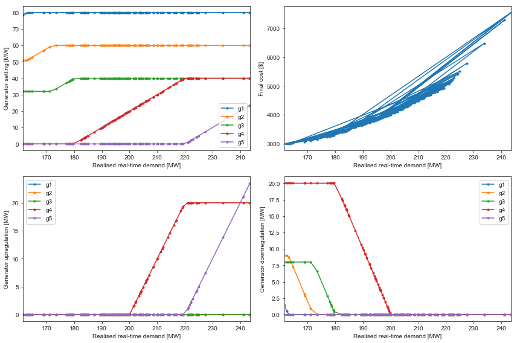
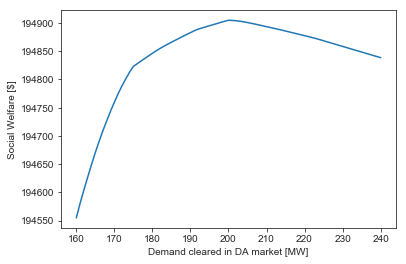

Decomposition Methods¶
[23]:
import matplotlib.pyplot as plt
import pandas as pd
import seaborn as sns
import numpy as np
import gurobipy as gb
%matplotlib inline
[7]:
df = pd.read_csv('https://raw.githubusercontent.com/ming-zhao/Optimization-and-Learning/master/data/benders.csv',
index_col='gen', skipinitialspace=True)
df
[7]:
| maxprod | price | uppremium | downpremium | upflex | downflex | |
|---|---|---|---|---|---|---|
| gen | ||||||
| g1 | 80 | 10 | 2 | 8 | 0.10 | 0.10 |
| g2 | 60 | 20 | 4 | 7 | 0.15 | 0.15 |
| g3 | 40 | 30 | 6 | 6 | 0.20 | 0.20 |
| g4 | 40 | 40 | 8 | 5 | 0.50 | 0.50 |
| g5 | 50 | 100 | 10 | 2 | 1.00 | 1.00 |
[21]:
# Class which can have attributes set
class expando(object):
pass
class Benders_Master:
def __init__(self, max_iters=25, verbose=True, numscenarios=100, demand_avg=200.0, demand_std=20.0, epsilon=0.001, delta=0.001):
'''
Class which solves the benders decomposed version of the dispatch problem.
Parameters
----------
max_iters: int, default 25
Maximum number of Benders iterations to run.
verbose: boolean, default True
Print information on upper and lower bounds for each iteration
numscenarios: int, default 100
Number of scenarios to use for subproblems
demand_avg: float, default 200.0
Average demand, used as day-ahead bid.
demand_std: float, default 20.0
Standard deviation for demand in scenario generation.
epsilon: float, default 0.001
Relative threshold for benders iterations.
Iterations will stop if ub - lb > |epsilon * lb|
delta: float, default 0.001
Absolute threshold for benders iterations.
Iterations will stop if ub < lb + delta
'''
self.data = expando()
self.variables = expando()
self.constraints = expando()
self.results = expando()
self.params = expando()
self.params.max_iters = max_iters
self.params.verbose = verbose
self.params.numscenarios = numscenarios
self.params.demand_avg = demand_avg
self.params.demand_std = demand_std
self._init_benders_params(epsilon=epsilon, delta=delta)
self._load_data()
self._build_model()
def optimize(self, force_submodel_rebuild=False):
# initial solution
self.model.optimize()
# Only build submodels if they don't exist or a rebuild is forced.
if not hasattr(self, 'submodels') or force_submodel_rebuild:
self.submodels = {s: Benders_Subproblem(self, scenario=s) for s in self.data.scenarios}
# Update fixed variables for submodels and rebuild.
[sm.update_fixed_vars(self) for sm in self.submodels.values()]
[sm.optimize() for sm in self.submodels.values()]
# Update bounds based on submodel rebuild
self._update_bounds()
self._save_vars()
# Build cuts until we reach absolute and relative tolerance,
# or max_iters cuts have been generated.
while (
(self.data.ub > self.data.lb + self.data.delta or
self.data.ub - self.data.lb > abs(self.data.epsilon * self.data.lb)) and
len(self.data.cutlist) < self.params.max_iters):
# Generate new cut.
if self.params.verbose:
print('********')
print('* Benders\' step {0}:'.format(len(self.data.upper_bounds)))
print('* Upper bound: {0}'.format(self.data.ub))
print('* Lower bound: {0}'.format(self.data.lb))
print('********')
self._do_benders_step()
pass
def _do_benders_step(self):
self._add_cut()
self._start_from_previous()
self.model.optimize()
[sm.update_fixed_vars(self) for sm in self.submodels.values()]
[sm.optimize() for sm in self.submodels.values()]
self._update_bounds()
self._save_vars()
def _init_benders_params(self, epsilon=0.001, delta=0.001):
self.data.cutlist = []
self.data.upper_bounds = []
self.data.lower_bounds = []
self.data.mipgap = []
self.data.solvetime = []
self.data.alphas = []
self.data.lambdas = {}
self.data.epsilon = epsilon
self.data.delta = delta
self.data.ub = gb.GRB.INFINITY
self.data.lb = -gb.GRB.INFINITY
###
# Data Loading
###
def _load_data(self):
self._load_generator_data()
self._load_demand_data()
def _load_generator_data(self):
self.data.geninfo = pd.read_csv('https://raw.githubusercontent.com/ming-zhao/Optimization-and-Learning/master/data/benders.csv', index_col='gen', skipinitialspace=True)
self.data.generators = self.data.geninfo.index
def _load_demand_data(self):
self.data.VOLL = 1000
self.data.demand_da = self.params.demand_avg
self.data.scenarios = ['s'+str(i) for i in range(self.params.numscenarios)]
self.data.demand_rt = pd.Series(
data=np.random.normal(self.params.demand_avg, self.params.demand_std, size=self.params.numscenarios),
index=self.data.scenarios)
self.data.scenarioprobs = {s: 1.0/self.params.numscenarios for s in self.data.scenarios}
# Dump load
self.data.dumploadprice = 10
self.data.dumploadmax = self.data.demand_da
###
# Model Building
###
def _build_model(self):
self.model = gb.Model()
self._build_variables()
self._build_objective()
self._build_constraints()
self.model.update()
def _build_variables(self):
m = self.model
gens = self.data.generators
geninfo = self.data.geninfo
self.variables.gprod_da = {}
for g in gens:
self.variables.gprod_da[g] = m.addVar(lb=0, ub=geninfo.maxprod[g])
self.variables.load_da = m.addVar(lb=0, ub=self.data.demand_da)
# Benders' proxy variable
self.variables.alpha = m.addVar(lb=-self.data.demand_da*self.data.VOLL, ub=gb.GRB.INFINITY)
m.update()
def _build_objective(self):
m = self.model
gens = self.data.generators
geninfo = self.data.geninfo
self.objective = m.setObjective(
gb.quicksum(geninfo.price[g] * self.variables.gprod_da[g] for g in gens) -
self.data.VOLL*self.variables.load_da +
self.variables.alpha)
def _build_constraints(self):
m = self.model
gens = self.data.generators
geninfo = self.data.geninfo
self.constraints.powerbalance_da = m.addConstr(
gb.quicksum(self.variables.gprod_da[g] for g in gens),
gb.GRB.EQUAL,
self.variables.load_da)
self.constraints.cuts = {}
def _add_cut(self):
gens = self.data.generators
geninfo = self.data.geninfo
cut = len(self.data.cutlist)
self.data.cutlist.append(cut)
# Get sensitivities from subproblem
sens_gen = {
g: sum(self.data.scenarioprobs[s] * self.submodels[s].constraints.fixed_da[g].pi for s in self.data.scenarios)
for g in gens}
self.data.lambdas[cut] = sens_gen
sens_load = sum(self.data.scenarioprobs[s] * self.submodels[s].constraints.fixed_load_da.pi for s in self.data.scenarios)
# Get subproblem objectives)
z_sub = sum(self.data.scenarioprobs[s] * self.submodels[s].model.ObjVal for s in self.data.scenarios)
# Generate cut
self.constraints.cuts[cut] = self.model.addConstr(
self.variables.alpha,
gb.GRB.GREATER_EQUAL,
z_sub +
gb.quicksum(sens_gen[g] * self.variables.gprod_da[g] for g in gens) -
sum(sens_gen[g] * self.variables.gprod_da[g].x for g in gens) +
sens_load * (self.variables.load_da - self.variables.load_da.x)
)
def _clear_cuts(self):
self.data.cutlist = []
self.data.lambdas = {}
self.model.update()
for con in self.constraints.cuts.values():
self.model.remove(con)
self.constraints.cuts = {}
self.data.ub = gb.GRB.INFINITY
self.data.lb = -gb.GRB.INFINITY
self.data.upper_bounds = []
self.data.lower_bounds = []
###
# Update upper and lower bounds for Benders' iterations
###
def _update_bounds(self):
z_sub = sum(self.data.scenarioprobs[s] * self.submodels[s].model.ObjVal for s in self.data.scenarios)
z_master = self.model.ObjVal
# The best upper bound is the best incumbent with
# alpha replaced by the sub problems' actual cost
self.data.ub = z_master - self.variables.alpha.x + z_sub
# The best lower bound is the current bestbound,
# This will equal z_master at optimality
try:
self.data.lb = self.model.ObjBound
except gb.GurobiError:
self.data.lb = self.model.ObjVal
self.data.upper_bounds.append(self.data.ub)
self.data.lower_bounds.append(self.data.lb)
self.data.mipgap.append(self.model.params.IntFeasTol)
self.data.solvetime.append(self.model.Runtime)
def _save_vars(self):
# self.data.xs.append(self.variables.x.x)
# self.data.ys.append(self.submodel.variables.y.x)
self.data.alphas.append(self.variables.alpha.x)
def _start_from_previous(self):
'''
Used to warm-start MIP problems.
'''
pass
[20]:
class Benders_Subproblem:
def __init__(self, MP, scenario=0):
self.data = expando()
self.variables = expando()
self.constraints = expando()
self.results = expando()
self.MP = MP
self.data.scenario = scenario
self._build_model()
self.update_fixed_vars(MP)
def optimize(self):
self.model.optimize()
###
# Model Building
###
def _build_model(self):
self.model = gb.Model()
self.model.setParam('OutputFlag', False)
self._build_variables()
self._build_objective()
self._build_constraints()
self.model.update()
def _build_variables(self):
m = self.model
dumploadmax = self.MP.data.dumploadmax
gens = self.MP.data.generators
geninfo = self.MP.data.geninfo
s = self.data.scenario
demandmax = self.MP.data.demand_rt[s]
# Production of generator g, up and downregulation
# Up and down regulation are limited by the generators' capability.
self.variables.gprod_da = {}
self.variables.gprod_rt = {}
self.variables.gprod_rt_up = {}
self.variables.gprod_rt_down = {}
for g in gens:
self.variables.gprod_da[g] = m.addVar(lb=0.0, ub=geninfo.maxprod[g])
self.variables.gprod_rt[g] = m.addVar(lb=0.0, ub=geninfo.maxprod[g])
self.variables.gprod_rt_up[g] = m.addVar(lb=0.0, ub=geninfo.maxprod[g] * geninfo.upflex[g])
self.variables.gprod_rt_down[g] = m.addVar(lb=0.0, ub=geninfo.maxprod[g] * geninfo.downflex[g])
self.variables.loadserved = m.addVar(lb=0.0, ub=demandmax)
self.variables.loadserved_DA = m.addVar(lb=0.0, ub=gb.GRB.INFINITY)
self.variables.dumpload = m.addVar(lb=0.0, ub=dumploadmax)
m.update()
def _build_objective(self):
m = self.model
gens = self.MP.data.generators
geninfo = self.MP.data.geninfo
VOLL = self.MP.data.VOLL
dumploadprice = self.MP.data.dumploadprice
m.setObjective(
gb.quicksum((geninfo.price[g] + geninfo.uppremium[g])*self.variables.gprod_rt_up[g] for g in gens) +
gb.quicksum((- geninfo.price[g] + geninfo.downpremium[g])*self.variables.gprod_rt_down[g] for g in gens) -
VOLL*(self.variables.loadserved-self.variables.loadserved_DA) +
dumploadprice * self.variables.dumpload
)
def _build_constraints(self):
m = self.model
gens = self.MP.data.generators
self.constraints.powerbalance_rt = m.addConstr(
gb.quicksum(self.variables.gprod_rt[g] for g in gens),
gb.GRB.EQUAL,
self.variables.loadserved + self.variables.dumpload)
self.constraints.coupling_da = {}
self.constraints.fixed_da = {}
for g in gens:
self.constraints.coupling_da[g] = m.addConstr(
self.variables.gprod_rt[g],
gb.GRB.EQUAL,
self.variables.gprod_da[g] + self.variables.gprod_rt_up[g] - self.variables.gprod_rt_down[g])
self.constraints.fixed_da[g] = m.addConstr(
self.variables.gprod_da[g],
gb.GRB.EQUAL,
0.0)
self.constraints.fixed_load_da = m.addConstr(
self.variables.loadserved_DA,
gb.GRB.EQUAL,
0.0)
def update_fixed_vars(self, MP):
for g in self.MP.data.generators:
self.constraints.fixed_da[g].rhs = MP.variables.gprod_da[g].x
self.constraints.fixed_load_da.rhs = MP.variables.load_da.x
[25]:
import matplotlib.pyplot as plt
import pandas as pd
import seaborn as sns
import numpy as np
# from benders_stochastic_master import Benders_Master
sns.set_style('ticks')
m = Benders_Master()
m.model.Params.OutputFlag = False
m.optimize()
m.model.write("test.lp")
rtdf = pd.DataFrame({g: {m.data.demand_rt[s]: m.submodels[s].variables.gprod_rt[g].x for s in m.data.scenarios} for g in m.data.generators})
updf = pd.DataFrame({g: {m.data.demand_rt[s]: m.submodels[s].variables.gprod_rt_up[g].x for s in m.data.scenarios} for g in m.data.generators})
downdf = pd.DataFrame({g: {m.data.demand_rt[s]: m.submodels[s].variables.gprod_rt_down[g].x for s in m.data.scenarios} for g in m.data.generators})
dacost = m.model.ObjVal - m.variables.alpha.x
rscostseries = pd.Series({m.data.demand_rt[s]: sum(
m.data.geninfo.price[g]*m.submodels[s].variables.gprod_rt[g].x +
m.data.geninfo.uppremium[g]*m.submodels[s].variables.gprod_rt_up[g].x +
m.data.geninfo.downpremium[g]*m.submodels[s].variables.gprod_rt_down[g].x
for g in m.data.generators) for s in m.data.scenarios})
plt.ion()
plt.figure(figsize=(12, 8))
ax = plt.subplot(221)
rtdf.plot(ax=ax, marker='.')
plt.xlabel('Realised real-time demand [MW]')
plt.ylabel('Generator setting [MW]')
ax = plt.subplot(222)
rscostseries.plot(ax=ax, marker='.')
plt.xlabel('Realised real-time demand [MW]')
plt.ylabel('Final cost [$]')
ax = plt.subplot(223)
updf.plot(ax=ax, marker='.')
plt.xlabel('Realised real-time demand [MW]')
plt.ylabel('Generator upregulation [MW]')
ax = plt.subplot(224)
downdf.plot(ax=ax, marker='.')
plt.xlabel('Realised real-time demand [MW]')
plt.ylabel('Generator downregulation [MW]')
plt.tight_layout()
m.model.Params.OutputFlag = False
m.params.verbose = False
demands = np.linspace(160, 240, 81)
costs = []
for demand in demands:
m.variables.load_da.ub = demand
m.variables.load_da.lb = demand
m._clear_cuts()
m.optimize()
costs.append(-m.model.ObjVal)
m.variables.load_da.ub = 200
m.variables.load_da.lb = 0
plt.figure()
plt.plot(demands, costs)
plt.ylabel('Social Welfare [$]')
plt.xlabel('Demand cleared in DA market [MW]')
********
* Benders' step 1:
* Upper bound: -194905.0151374541
* Lower bound: -396000.0
********
********
* Benders' step 2:
* Upper bound: -187402.87165686628
* Lower bound: -195412.41513745408
********
********
* Benders' step 3:
* Upper bound: -190056.8887556546
* Lower bound: -195394.04089071462
********
********
* Benders' step 4:
* Upper bound: -190189.18706464546
* Lower bound: -195387.0448463883
********
********
* Benders' step 5:
* Upper bound: -191926.79858712998
* Lower bound: -195371.37543796783
********
********
* Benders' step 6:
* Upper bound: -193053.94425360794
* Lower bound: -195252.92352163696
********
********
* Benders' step 7:
* Upper bound: -193094.90138226718
* Lower bound: -195252.59889917375
********
********
* Benders' step 8:
* Upper bound: -193758.79224701668
* Lower bound: -195237.6931196585
********
********
* Benders' step 9:
* Upper bound: -193659.98456954808
* Lower bound: -195220.181321286
********
********
* Benders' step 10:
* Upper bound: -194260.30295156644
* Lower bound: -195202.9596396856
********
********
* Benders' step 11:
* Upper bound: -194459.43108348924
* Lower bound: -195111.2427179468
********
********
* Benders' step 12:
* Upper bound: -194405.62220426043
* Lower bound: -195073.99413989688
********
********
* Benders' step 13:
* Upper bound: -194510.54007723092
* Lower bound: -195072.45353457573
********
********
* Benders' step 14:
* Upper bound: -194758.666887083
* Lower bound: -195065.588551258
********
********
* Benders' step 15:
* Upper bound: -194781.09309929312
* Lower bound: -194987.81892669486
********
********
* Benders' step 16:
* Upper bound: -194817.49128958743
* Lower bound: -194980.491941937
********
********
* Benders' step 17:
* Upper bound: -194853.54839749951
* Lower bound: -194972.91244241988
********
********
* Benders' step 18:
* Upper bound: -194894.67175970715
* Lower bound: -194915.2602827549
********
********
* Benders' step 19:
* Upper bound: -194901.65770319957
* Lower bound: -194910.86229620536
********
********
* Benders' step 20:
* Upper bound: -194904.55696394757
* Lower bound: -194905.12253416877
********
********
* Benders' step 21:
* Upper bound: -194905.00495542135
* Lower bound: -194905.0276661433
********
[25]:
Text(0.5, 0, 'Demand cleared in DA market [MW]')

